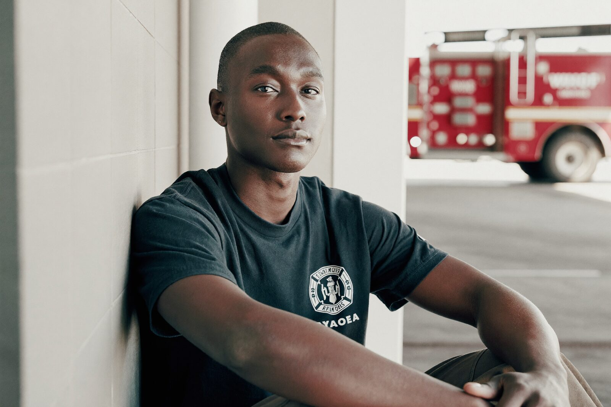
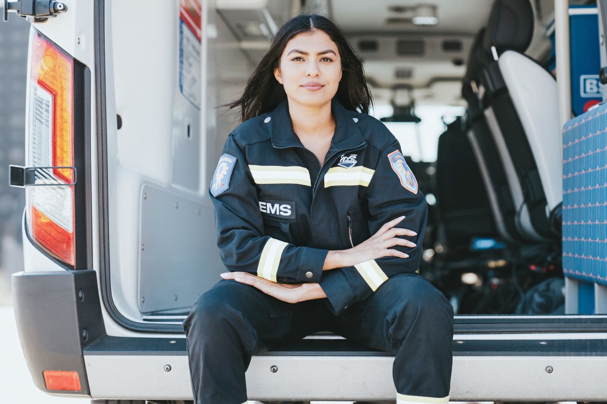

Be as strong off shift as you are on it.
Train your nervous system and see results where they count, on the job and in your personal relationships.
Perform under pressure.
Stay mentally sharp during the moments that matter most, and during the inevitable paperwork that follows.
Better sleep.
Downshift on demand so your body recovers faster and more deeply.
Maintain control in conflict.
De-escalate confrontations on and off the job.
Go further in your career.
Burnout prevention that keeps experienced people on the job longer.

You deserve more than surviving your career.
Train today. Recover better. Reconnect with why you started. Be present for the life you're living, not just the shift you're working.
I had an officer describe getting through a critical incident at work and responding in a way they felt was effective. When I asked what strategies they used, they told me they used the nervous-system training they learned while in the police academy.
Bring it to your department or train 1:1.
A unit that performs under pressure.
- Healthier people, stronger performance and communication, fewer burnout losses
- Workshops tailored to your unit, shift structure, or crew
- Academy blocks or workplace programs that fit existing training
- 6–10 week programs with outcomes tracking
Gain an edge, on your schedule.
- Recognize when you're running outside your window of tolerance, and recover faster
- Private, practical, and scheduled around your shifts
- Coaching, not therapy: goals, reps, and measurable progress
- Starts with a no-cost intro call
Take the first step for you or your department.
Learn what nervous-system training can do for your sleep, recovery, and performance.
Feel the shift right now.
- Inhale through your nose for a count of 4.
- Exhale slow through pursed lips for a count of 8.
- Repeat five times. About 90 seconds.
That long exhale is the switch that downshifts your nervous system. Feeling it once is the easy part. The training is knowing why it works, when to reach for it, and how to hold it steady.